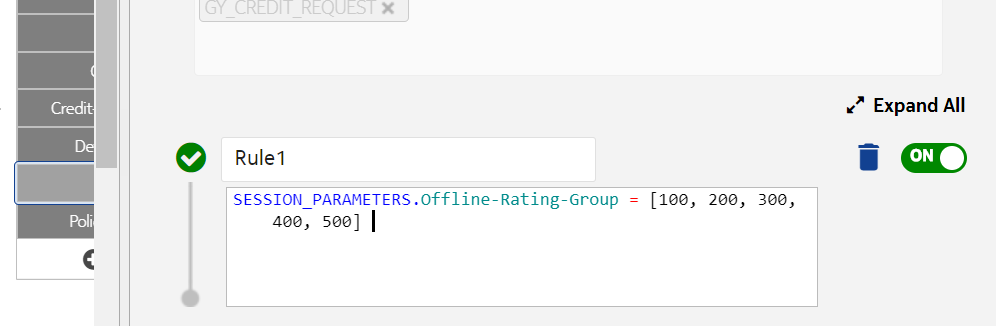

This feature is applicable to Gy and N40 interfaces.
After configuring the offline rating group values in a rule (RSV), if a Gy call has the same rating group value that is configured in the rule, then this Gy (data or PS) call is processed as offline charging.
For a 5G Nchf request, the rating group of muu matched with the offline rating groups is configured in RSV, and if one of the following condition is met:
-
The quotaManagementIndicator attribute value for that muu is OFFLINE_CHARGING, or
-
uuc is not present and requestedUnit is present,
Then, the 5G Nchf request is treated as offline charging.
 Note:
Note:-
When the rating group value in a Gy or Nchf call request matches the configured offline rating group value in a rule, then a Gy session is created in the database; but no rating session is created in the database as rating logic is not processed for offline charging.
-
If a rating group value does not match with the configured offline rating group value in rule, then the Gy (data or PS) request is processed as online charging.
For a 5G Nchf request, if a rating group value does not match with the configured offline rating group value in rule, and if either the quotaManagementIndicator attribute value for that muu is ONLINE_CHARGING or uuc is not present, then the 5G Nchf request is treated as online charging.
-
If a Gy (data or PS) call comes with Service-Identifier and without a rating group, then this request is processed as online charging and a rating session is created.
-
A Gy (data or PS) call and 5G Nchf request can be processed as offline, online, or both, which is termed as mixed charging.
-
The offline MSCCs or MUUs are not rejected for barred device.
-
In a mixed or offline (MSCC or MUU) charging, if there is even a single offline success MSCC or MUU present in response, then command level result code is SUCCESS.
Configuring this feature
To configure the offline rating group feature that allows specific rating groups without counting usage for access barred devices,create the following rule in the GY_CREDIT_REQUEST:
SESSION_PARAMETERS.Offline-Rating-Group = [100, 200, 300, 400, 500]
where 100, 200, 300, 400, and 500 are the values for rating group of MSCC. Similarly, you can configure the desired values for your rating group that must be considered as offline rating group:
Following table provides details on Offline-Rating-Group parameter:
| Action parameter | Value |
|---|---|
| Name | Offline-Rating-Group |
| Value Type | BaseValueType |
| Allow Multiple Values | Multiple values are allowed separated by (,) comma |
| Occurrence | Single |
| Result Context | SESSION_PARAMETERS |
| Rule Set | GY_CREDIT_REQUEST |
Configuring VT/QHT/VQT/GSU for 4G/5G offline charging
-
Validation on VT and QHT will be same as for online charging. For example, if a rule in the quota management (slicing profile) is configured without VT, then the rule is considered as invalid and rule's values are not considered; therefore, the default values are considered.
-
GSU and VQT values are populated according to the following formula:
Let us consider that the quota management (slicing profile) is configured with Slice-Size = 200 and Volume-Quota-Threshold = 50, then the GSU or VQT values are sent in CCA based on the VQT type configuration as follows:
- If VQT type is configured as FIXED_ADD_GSU, then the
following GSU/VQT values are sent in CCA:
GSU = 250 (slice size + VQT value)
VQT = 50 (VQT value configured in slicing profile)
- If VQT type is configured as PERCENTAGE or not configured,
then the following GSU/VQT values are sent in CCA:
GSU = 200 (slice size)
VQT = 100 (VQT % of slice size)
If VQT value is greater than 100, then GSU will be 100% of slice size.
- If VQT type is configured as FIXED_ADD_GSU, then the
following GSU/VQT values are sent in CCA:
- Service unit type is to be set as default value CC-Total-Octets in GSU irrespective of any type coming in the request.
- The following Is-Offline attribute checks whether the MSCC is offline
or not.
Attribute name Source context Rule set Multiple-Services-Credit-Control.Is-Offline GY_MESSAGE SLICING_PROFILE MUU.Is-Offline NCHF_CHARGING_MESSAGE SLICING_PROFILE -
The following source contexts are considered to evaluate rules in the quota management (slicing profile) in case of offline charging:
- NCHF_CHARGING_MESSAGE
- SPR_DEVICE
- SPR_GROUP
- GY_MESSAGE
-
Only one group is supported for the SPR_GROUP source context. If the device is attached to multiple groups, then the first group is fetched from the list. The first group fetched is considered for the SPR_GROUP source context and other groups are ignored.